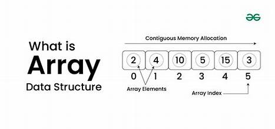

Introduction To C++
C++ is a powerful general-purpose programming language that was deveoloped as an extension of the C programming language by Bjarne Stroustrup in the early 1980s.
Features of C++
- Object-oriented: C++ supports object-oriented programming (OOP) principles, allowing for the creation of classes and object.
- Rich standard Library: C++ provides a rich set of built-in functions and libraries, which can siginificantly reduce the Development time.
- Performance: C++ offers low-level memory manipulation, allowing developers to optimize Performance-critical applications.
- Portability: C++ programs cab be compiled and run on various platforms without significant midifications.
- Compatability with C: C++ is compatible with C, allowing for the intergration of existing C code.
Basic Syntax
#include <iostream>
using namespace std;
int main() {
cout << "Hello, World!" << endl;
return 0;
}
- #include <iostream> This includes the input/output stream Library, allowing the use of cout for output and cin for input.
- using namespace std: This line allows access to the standard Library features without prefixing them with std::
- int main(): The entry point of every C++ program.
- cout:Used for outputting data to the console.
- return 0; :Indicates that the program has ended successfully.
applications of C++
- System Software:C++ is used in developing operating system and system-level appilications.
- Game Development:Many game engines and games are written in C++ due to its Performance and control over system Resources.
- Embedded Systems: C++ is often used in programming embedded systems for devices like smartphones, appliance, and automotive systems.
- Web Browsers: Many web Browsers, like Google Chrome, use C++ for Performance-critical componetss.
Online C++ Compiler
Introduction to Arrays
What is Array?
An array is a data structure that stores a collection of elements, typically of the same data type. Array are used to store multiple values in a single variable, which allows for efficient data management and manipulation.
Characteristics of Arrays
- Fixed Size: The size of an array is defined when it is created and cannot be changed.
- Indexed: Each element in an array is accessed using an index, which typically starts from 0.
- Homogeneous Elements:All element in an array must be of the same data type, such as integers, floats, or strings.
Type of Arrays
- One-Dimensional Arrays: A linear list of elements, where each element can be accessed by a single index.
- Example:int numbers[5];(stores 5 integers)
- Multi-Dimensional Array:Array with more than one dimesion, commonly used for matrices and tables.
- Example:int matrix[3][3];(a 3*3 matrix of integers)
- Dynamic Array:Arrays that can change size during program execution, typically implemented using data structure like lists.
Introduction to Tree
Tree data structure is a hierarchical structure that is used to represent and organize data in the form of parent child relationship. The following are some real world situations which are naturally a tree.

Characteristics of Tree
- Trees have a strong, thick, and woody stem called a trunk that supports the branches and leaves.
- Trees are generally taller than shrubs and other plants, often reaching several meters in height.
- Trees are perennial plants, meaning they live for many years and grow continuously.
Types of Tree
- Binary Tree:A binary tree is a tree data structure where each node has at most two children. These two children are usually referred to as the left child and right child. It is widely used in applications such as binary search trees and heaps.
- Example: Consider the tree below. Since each node of this tree has only 2 children, it can be said that this tree is a Binary Tree
- Ternary Tree:A Ternary Tree is a tree data structure in which each node has at most three child nodes, usually distinguished as “left”, “mid” and “right”.
- Example: Consider the tree below. Since each node of this tree has only 3 children, it can be said that this tree is a Ternary Tree.
- N-ary Tree (Generic Tree):Generic trees are a collection of nodes where each node is a data structure that consists of records and a list of references to its children(duplicate references are not allowed). Unlike the linked list, each node stores the address of multiple nodes.
- Examples of N-ary Trees:
- B-tree: A self-balancing search tree where nodes can have multiple children, usually used for indexing large databases.
- B+ Tree: A B+ tree is a variation of the B-tree that only stores data in the leaf nodes, making range queries more efficient.
- Trie (Prefix Tree): A tree where each node represents a character, and paths from the root to leaves represent strings. It can have a variable number of children for each node, making it an N-ary tree.
- Examples of N-ary Trees:
Tutorial of Tree
Introduction to Graph
What is Graph?
Graph is a non-linear data structure like tree data structure. The limitation of tree is, it can only represent hierarchical data.
Characteristics of Graph
- Vertices (Nodes): The fundamental units of a graph, representing entities.
- Edges (Links): Connections between pairs of vertices.
- Vertices (Nodes):The fundamental units or points in a graph. Usually denoted by V.
Types of Graph
- Finite Graphs:A graph is said to be finite if it has a finite number of vertices and a finite number of edges.A finite graph is a graph with a finite number of vertices and edges. In other words, both the number of vertices and the number of edges in a finite graph are limited and can be counted.
- Infinite Graph: A graph is called an infinite graph if it has an infinite number of vertices and an infinite number of edges. Unlike finite graphs, which have a fixed number of nodes and connections, infinite graphs extend indefinitely.
- Trivial Graph:A graph is said to be trivial if a finite graph contains only one vertex and no edge. A trivial graph is a graph with only one vertex and no edges. It is also known as a singleton graph or a single vertex graph.
- Simple Graph:A simple graph is a graph that does not contain more than one edge between the pair of vertices. A simple railway track connecting different cities is an example of a simple graph.